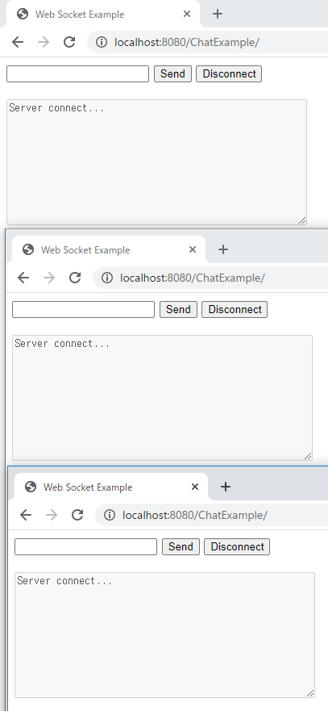
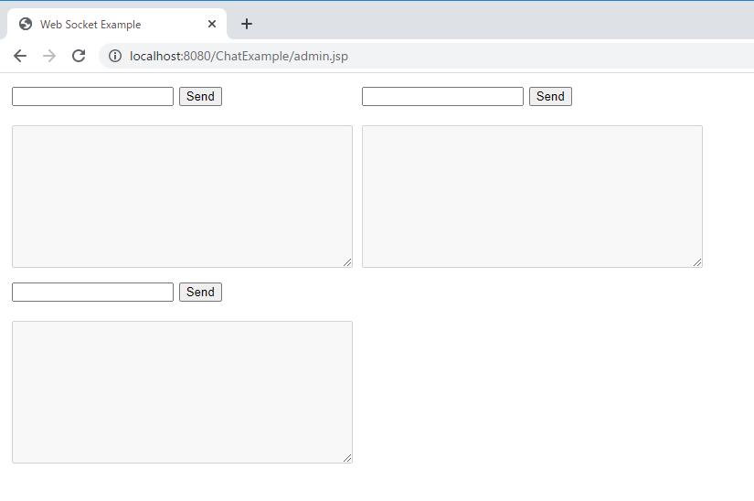
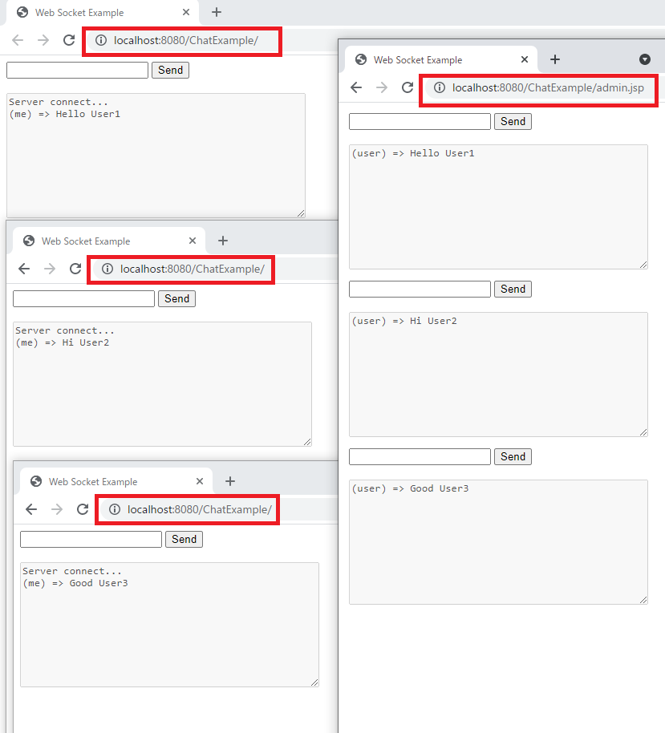
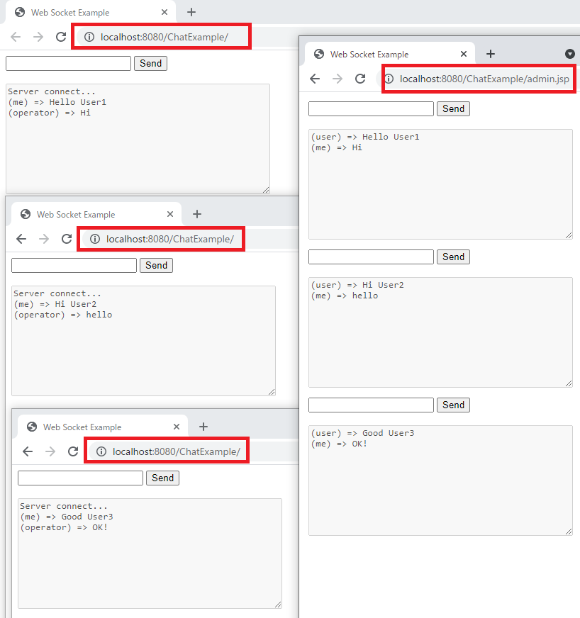
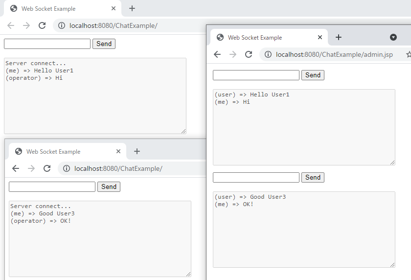

[Java] WebSocketを利用してユーザ(サイト運用者)が他のユーザとチャットする方法
こんにちは。明月です。
この投稿はWebSocketを利用してユーザ(サイト運用者)が他のユーザとチャットする方法に関する説明です。
私のメールでサイト運用者とユーザ間にWebSocketを利用して1:1チャットする方法に関して質問があって実装してみました。
Web上でリアルでチャットするためにはWebSocket機能に関して知るべきです。
link - [Java] WebSocket (ウェブソケット)
WebSocketの構造は一般Socketと差異がありますが、仕様に関しては似ているのでSocket仕様だけ分かれば簡単に実装することができます。
link - [Java] 27. ネットワーク通信(Socket)をする方法
まず、仕様の条件は運用者が他のユーザとWebSocketでチャットすることです。
サーバの基準をみれば運用者とユーザはソケットクライアントです。つまり、Server側ではClientが運用者ユーザと一般ユーザかの区分する必要があります。
Webの環境は接続ページによる接続者の区分ができるので、接続URLによるClientを区分しましょう。
始めの仕様は一般ユーザはindex.jspに接続するし、運用者はadmin.jspを接続しましょう。
一般ユーザは運用者と1:1チャットですが、運用者はユーザとn:1チャットになります。
サーバとクライアントは一つのソケットに連結されているので、keyを通って区分します。
二つ目の仕様は一般ユーザが接続すればuniqueキーを与えて、運用者はユーザの区分のためこのuniqueキーを通ってデータを送受信しましょう。
一般ユーザとサーバ間の通信です。
<%@ page language="java" contentType="text/html; charset=UTF-8" pageEncoding="UTF-8"%>
<!DOCTYPE html>
<html>
<head>
<title>Web Socket Example</title>
</head>
<body>
<!-- チャット領域 -->
<form>
<!-- テキストボックスにチャット内容を作成 -->
<input id="textMessage" type="text" onkeydown="return enter()">
<!-- サーバにメッセージを送信するボタン -->
<input onclick="sendMessage()" value="Send" type="button">
</form>
<br />
<!-- チャットのメッセージを表示するコンソール -->
<textarea id="messageTextArea" rows="10" cols="50" disabled="disabled"></textarea>
<script type="text/javascript">
// サーバのbroadsocketのサーブレットにWebSocketを接続する。
var webSocket = new WebSocket("ws://localhost:8080/ChatExample/broadsocket");
// コンソールテキスト領域
var messageTextArea = document.getElementById("messageTextArea");
// 接続する時のイベント
webSocket.onopen = function(message) {
// コンソールにメッセージを表示する。
messageTextArea.value += "Server connect...\n";
};
// 接続が終わる時のイベント
webSocket.onclose = function(message) { };
// エラーが発生する時のイベント
webSocket.onerror = function(message) {
// コンソールにメッセージを表示する。
messageTextArea.value += "error...\n";
};
// サーバからメッセージが受信する時のイベント
webSocket.onmessage = function(message) {
// コンソールにメッセージを表示する。
messageTextArea.value += "(operator) => " + message.data + "\n";
};
// サーバにメッセージを送信する関数
// Sendボタンを押下するかテキストからエンターを押下すると実行
function sendMessage() {
// テキストボックスのオブジェクトを取得
let message = document.getElementById("textMessage");
// コンソールにメッセージを表示する。
messageTextArea.value += "(me) => " + message.value + "\n";
// ソケットに送信する。
webSocket.send(message.value);
// テキストボックスを初期化
message.value = "";
}
// テキストボックスでエンターを押下すると。
function enter() {
// keyCode 13はエンターキーです。
if(event.keyCode === 13) {
// サーバにメッセージを送信
sendMessage();
// formによる自動submitをしないように
return false;
}
return true;
}
</script>
</body>
</html>
import java.io.IOException;
import java.util.ArrayList;
import java.util.Collections;
import java.util.List;
import java.util.Optional;
import java.util.UUID;
import javax.websocket.OnClose;
import javax.websocket.OnMessage;
import javax.websocket.OnOpen;
import javax.websocket.Session;
import javax.websocket.server.ServerEndpoint;
// 一般ユーザからサーバ間のWebSocket url
@ServerEndpoint("/broadsocket")
public class BroadSocket {
// searchUser関数のfilterラムダ式のためのインタフェース
private interface SearchExpression {
// ラムダ式のための関数
boolean expression(User user);
}
// サーバとユーザ間の接続をキーで区分するためのインラインクラス
private class User {
Session session;
String key;
}
// ユーザとサーバ間の接続リスト
private static List<User> sessionUsers = Collections.synchronizedList(new ArrayList<>());
// Sessionに接続リストにUserクラスを探索関数
private static User getUser(Session session) {
return searchUser(x -> x.session == session);
}
// Keyによって接続リストからUserクラスを探索関数
private static User getUser(String key) {
return searchUser(x -> x.key.equals(key));
}
// 接続リスト探索関数
private static User searchUser(SearchExpression func) {
Optional<User> op = sessionUsers.stream().filter(x -> func.expression(x)).findFirst();
// 結果があれば
if (op.isPresent()) {
// 結果をリターン
return op.get();
}
// なければnullリターン
return null;
}
// browserからWebSocketで接続すれば呼び出す関数
@OnOpen
public void handleOpen(Session userSession) {
// Userインスタンスを生成
User user = new User();
// Uniqueキーを生成 ('-'は取り除く)
user.key = UUID.randomUUID().toString().replace("-", "");
// WebSocketのセッション
user.session = userSession;
// ユーザリストに登録する。
sessionUsers.add(user);
// 運用者のClientにユーザが接続したことを渡す。
Admin.visit(user.key);
}
// browserからWebSocketによりメッセージを受信すれば呼び出す関数
@OnMessage
public void handleMessage(String message, Session userSession) throws IOException {
// Sessionで接続リストからUserクラスを探索
User user = getUser(userSession);
// 接続リストにUserがあれば(同然ある。なければバグ)
if (user != null) {
// 運用者のClientにユーザkeyとメッセージを渡す。
Admin.sendMessage(user.key, message);
}
}
// 運用者clientがユーザに送信するメッセージ
public static void sendMessage(String key, String message) {
// keyで接続リストからUserクラスを探索
User user = getUser(key);
// 接続リストにUserがあれば(同然ある。なければバグ)
if (user != null) {
try {
// ユーザSessionからsocketを取得した後、メッセージを送信する。
user.session.getBasicRemote().sendText(message);
} catch (IOException e) {
e.printStackTrace();
}
}
}
// WebSocketが終了すれば呼び出す関数(終了ボタンがないので、ブラウザを閉じると発生する。)
@OnClose
public void handleClose(Session userSession) {
// Sessionで接続リストからUserクラスを探索
User user = getUser(userSession);
// 接続リストにUserがあれば(同然ある。なければバグ)..)
if (user != null) {
// 運用者のClientにユーザキーで接続することを渡す。
Admin.bye(user.key);
// 上のユーザ接続リストからユーザを削除する。
sessionUsers.remove(user);
}
}
// ユーザ間の接続リストのキーを取得する関数
public static String[] getUserKeys() {
// 返却するString配列を宣言する。
String[] ret = new String[sessionUsers.size()];
// ユーザリストを繰り返す。
for (int i = 0; i < ret.length; i++) {
// ユーザのキーだけ返却変数に格納する。
ret[i] = sessionUsers.get(i).key;
}
// 値返却
return ret;
}
}
ここまではindex.jspと/broadsocketのWebSocket通信部分です。
これからは運用者とサーバ間の通信です。
<%@ page language="java" contentType="text/html; charset=UTF-8" pageEncoding="UTF-8"%>
<!DOCTYPE html>
<html>
<head>
<title>Web Socket Example</title>
<style>
/* 様々なチャット間の間隔と配列位置 */
.float-left{
float:left;
margin: 5px;
}
</style>
</head>
<body>
<!-- ユーザが接続するたびにテンプレートでチャットを生成する。 -->
<div class="template" style="display:none">
<form>
<!-- メッセージテキストボックス -->
<input type="text" class="message" onkeydown="if(event.keyCode === 13) return false;">
<!-- 送信ボタン -->
<input value="Send" type="button" class="sendBtn">
</form>
<br />
<!-- チャットのメッセージを表示するコンソール -->
<textarea rows="10" cols="50" class="console" disabled="disabled"></textarea>
</div>
<!-- ソースを簡単に作成するためにJqueryを使った。 -->
<script src="https://code.jquery.com/jquery-3.4.1.min.js"></script>
<script type="text/javascript">
// サーバのadminのサーブレットにWebSocketを接続する。
var webSocket = new WebSocket("ws://localhost:8080/ChatExample/admin");
// 運用者空のopen, close, errorは意味がないので形だけ作成
webSocket.onopen = function(message) { };
webSocket.onclose = function(message) { };
webSocket.onerror = function(message) { };
// サーバからメッセージが受信すれば
webSocket.onmessage = function(message) {
// メッセージの構造はJSONタイプ
let node = JSON.parse(message.data);
// メッセージのstatusはユーザの接続状況だ。
// visitはユーザが接続する時の状況
if(node.status === "visit") {
// 上のテンプレートのdivを取得
let form = $(".template").html();
// divを囲んで属性data-keyにuniqueキーを格納
form = $("<div class='float-left'></div>").attr("data-key",node.key).append(form);
// bodyに追加
$("body").append(form);
// messageはユーザからメッセージを受信する時の状況
} else if(node.status === "message") {
// keyで当該なdiv領域を探す。
let $div = $("[data-key='"+node.key+"']");
// console領域を探す。
let log = $div.find(".console").val();
// 下記にメッセージを追加する。
$div.find(".console").val(log + "(user) => " +node.message + "\n");
// byeはユーザと接続が終了する時の状況
} else if(node.status === "bye") {
// 当該なキーでdivを探してdomを削除
$("[data-key='"+node.key+"']").remove();
}
};
// 送信ボタンを押下する時のイベント
$(document).on("click", ".sendBtn", function(){
// divタグを探す。
let $div = $(this).closest(".float-left");
// メッセージテキストボックスを探して値を取得する。
let message = $div.find(".message").val();
// ユーザkeyを取得する。
let key = $div.data("key");
// console領域を探す。
let log = $div.find(".console").val();
// 下記にメッセージを追加する。
$div.find(".console").val(log + "(me) => " + message + "\n");
// テキストボックスの値を初期化する。
$div.find(".message").val("");
// WebSocketにメッセージを送信する。
webSocket.send(key+"#####"+message);
});
// テキストボックスでエンターを押下すると。
$(document).on("keydown", ".message", function(){
// keyCode 13はエンターキーです。
if(event.keyCode === 13) {
// 送信ボタンをクリックするトリガーを発生する。
$(this).closest(".float-left").find(".sendBtn").trigger("click");
// formによる自動submitをしないように
return false;
}
return true;
});
</script>
</body>
</html>
import java.io.IOException;
import javax.websocket.OnClose;
import javax.websocket.OnMessage;
import javax.websocket.OnOpen;
import javax.websocket.Session;
import javax.websocket.server.ServerEndpoint;
// 運用者ユーザからサーバ間のWebSocket url
@ServerEndpoint("/admin")
public class Admin {
// 運用者ユーザは一つに設定してもし、二つ以上のセッションが接続すれば最後のセッションだけ作動
private static Session admin = null;
// 運用者ユーザが接続すれば発生するイベント関数
@OnOpen
public void handleOpen(Session userSession) {
// 既存の運用者ユーザが接続中なら
if (admin != null) {
try {
// 接続を切る。
admin.close();
} catch (IOException e) {
}
}
// 運用者ユーザのセッションを変わる。
admin = userSession;
// 接続しているユーザ情報を運用者Clientに送信
for(String key : BroadSocket.getUserKeys()) {
// 送信
visit(key);
}
}
// 運用者ユーザがメッセージを送信すれば発生するイベント
@OnMessage
public void handleMessage(String message, Session userSession) throws IOException {
// keyとメッセージ区分キーの#####を入れた。(jsonにしてもよいですが、Gsonライブラリを使うのが面倒なので。。)
String[] split = message.split("#####", 2);
// 前はkeyデータ
String key = split[0];
// 後はメッセージ
String msg = split[1];
// 一般ユーザのキーでメッセージ送信
BroadSocket.sendMessage(key, msg);
}
// 接続が切れば上の運用者セッションをnull処理する。
@OnClose
public void handleClose(Session userSession) {
admin = null;
}
// 運用者ユーザでメッセージを送信する関数
private static void send(String message) {
// 運用者が接続した場合
if (admin != null) {
try {
// 送信
admin.getBasicRemote().sendText(message);
} catch (IOException e) {
e.printStackTrace();
}
}
}
// 一般ユーザが接続した時、運用者ユーザに送信するメッセージ
public static void visit(String key) {
// json構造でstatusはvisitです。keyはユーザキー情報です。(javascriptと合わせるプロトコール)
send("{\"status\":\"visit\", \"key\":\"" + key + "\"}");
}
// 一般ユーザからメッセージ受信する時、運用者ユーザに送信するメッセージ
public static void sendMessage(String key, String message) {
// json構造でstatusはmessageです。keyはユーザキー情報です。(javascriptと合わせるプロトコール)、messageは送信するメッセージです。
send("{\"status\":\"message\", \"key\":\"" + key + "\", \"message\":\"" + message + "\"}");
}
// 一般ユーザが接続終了する時、運用者ユーザに送信するメッセージ
public static void bye(String key) {
// json構造でstatusはbyeです。keyはユーザキー情報です。(javascriptと合わせるプロトコール)
send("{\"status\":\"bye\", \"key\":\"" + key + "\"}");
}
}
ソース作成は完了しました。デバッグして実行しましょう。

他のブラウザで運用者ユーザを接続しましょう。

接続すると運用者ブラウザで三つのチャットが開いていることを確認できます。
一般ユーザチャットで各違うメッセージを送信しましょう。

運用者ユーザの各チャットで各メッセージが送受信したことを確認できます。
今回は運用者ユーザが送信しましょう。

各ユーザのブラウザにメッセージを受信したことを確認できます。
今回はユーザ2の閉じます。

運用者のブラウザでユーザのチャットが消えました。
仕様が大体に合います。デザインとスクリプトは理解しやすいためにJqueryとバニラのバージョンを混雑に使いました。
ここまでWebSocketを利用してユーザ(サイト運用者)が他のユーザとチャットする方法に関する説明でした。
ご不明なところや間違いところがあればコメントしてください。
- [Java] Redisデータベースを接続して使い方(Jedisライブラリ)2022/02/16 18:13:17
- [Java] WebSocketでチャット履歴をローディングする方法2021/06/15 18:34:45
- [Java] WebSocketを利用してユーザ(サイト運用者)が他のユーザとチャットする方法2021/06/15 17:20:08
- [Java] HttpConnectionを利用してウェブページを取得する方法2020/05/20 23:53:24
- [Java] Jsoupを利用してXMLファイル(HTML)を扱う方法2020/05/19 19:32:21
- [Java] 日付フォーマット(SimpleDateFormat)を使う方法2020/03/25 00:36:53
- [Java] サーブレット(Servlet)の環境でファイルアップロード(プログレスバーでファイルアップロード状態を表示する方法)する方法2020/03/24 00:48:21
- [Java] Spring環境でファイルアップロード(プログレスバーでファイルアップロード状態を表示する方法)する方法2020/03/22 23:15:12
- [Java] FTPに接続してファイルをダウンロード、アップロードする方法(FTPClient)2020/03/20 02:44:36
- [Java] JSPのSpring環境でschedulerのcronを使う方法2020/03/18 00:24:32
- [Java] 57. EclipseでSpring bootを設定する方法2022/02/22 19:04:49
- [Python] Redisデータベースに接続して使い方2022/02/21 18:23:49
- [Java] Redisデータベースを接続して使い方(Jedisライブラリ)2022/02/16 18:13:17
- [C#] Redisのデータベースを接続して使い方2022/02/15 18:46:09
- [CentOS] Redisデータベースをインストールする方法とコマンドを使い方2022/02/14 18:33:07
- [Design pattern] 3-6. ステートパターン(State pattern)2021/11/17 20:04:47
- [Design pattern] 3-5. メメントパターン(Memento pattern)2021/11/16 20:01:36
- [Design pattern] 3-4. イテレータパターン(Iterator pattern)2021/11/15 19:31:28
- [CentOS] Linux環境(CentOS)でCassandra(NoSQL DB)をインストールする方法(DBeaverブラウザでNoSQL使い方)2021/11/12 17:33:58
- [Design pattern] 3-3. コマンドパターン(Command pattern)2021/11/05 17:01:42
- [Window] apache-tomcatでロードバランシング(Load balancing)する方法とセッションクラスタリング（セッション共有）2021/11/05 16:58:45
- [Window] Apacheでmod_jkとmod_proxyの差異、apacheでtomcatのwebsocketのプロキシフォーワードする方法2021/11/05 16:55:05
- [PHP] Apache環境の同じホスト中でPHPとJava(Servlet)を同時に起動、運用する方法2021/11/05 16:52:04
- [C#] 61. ウィンドウフォーム(Window form)でスレッド(Thread)を使い方、クロススレッド問題解決2021/11/04 19:29:51
- [Design pattern] 3-2. 責任の連鎖パターン(Chain of responsibility pattern)2021/11/04 19:27:58